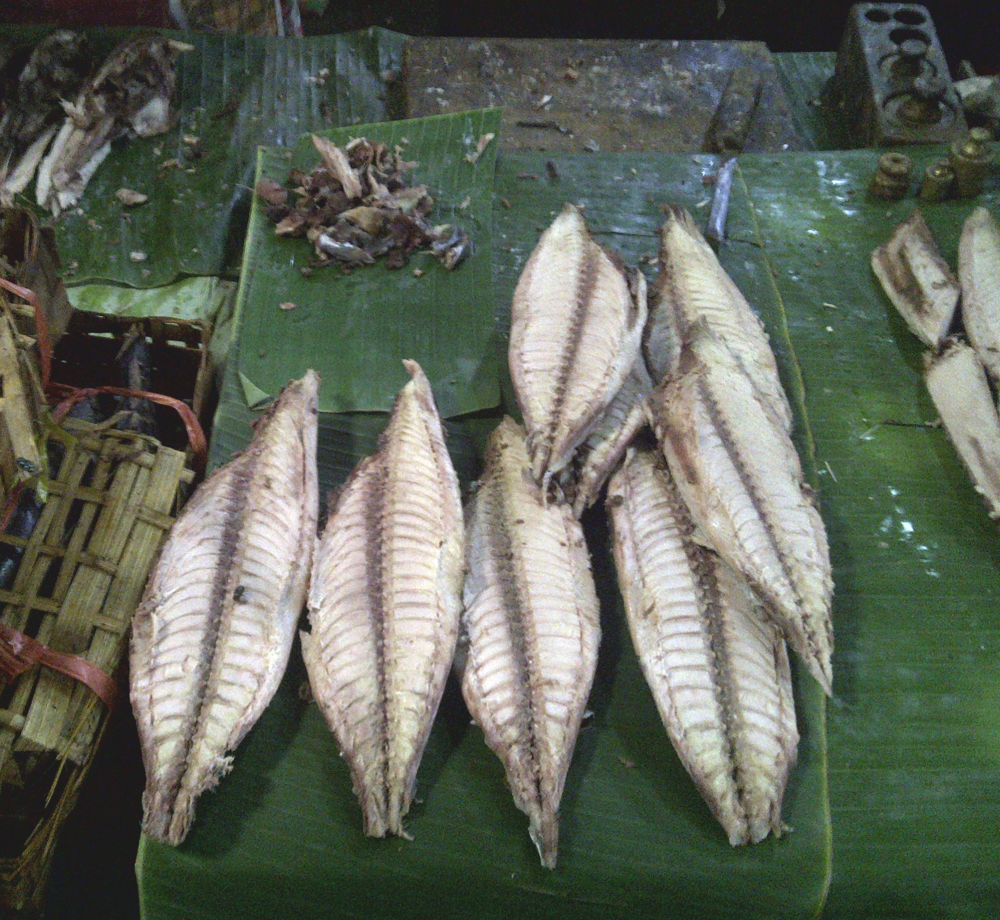
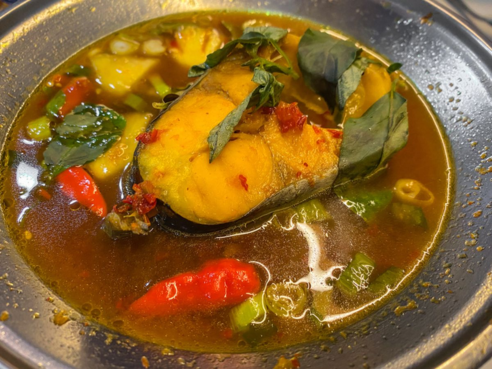
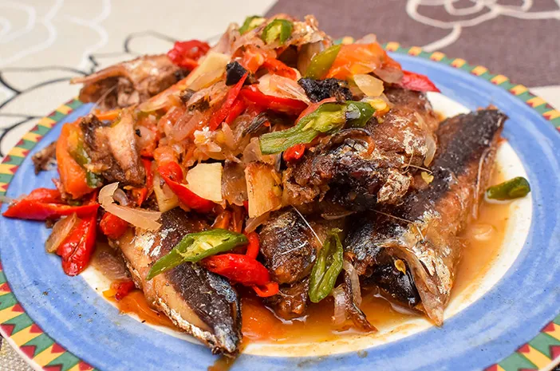

Pindang is a traditional cured meat from the Philippine province of Pangasinan, known for its distinctive blend of sweet, savory, and tangy flavors. It is a regional variant of the Filipino tapa (dried or cured beef), but the curing process and taste profile differ markedly due to local ingredients and methods.
Fun Facts
- Can be eaten fried or grilled
- Has a strong, salty-sour flavor
- Similar to tapa but more traditional and rustic
Preparation and Ingredients

Pindang typically uses thinly sliced pork or beef marinated in a mixture of vinegar, sugar, salt, garlic, and sometimes soy sauce. The marinated meat is sun-dried or air-dried briefly, giving it a slightly chewy texture once cooked. Vinegar and sugar serve both as preservatives and flavoring agents, balancing tanginess with sweetness. Unlike heavily dried tapa, pindang retains more moisture and tenderness.
Regional Variations

Within Pangasinan, recipes vary by town and family tradition. Some versions include annatto for color, while others incorporate native palm vinegar or cane vinegar for acidity. Certain areas, like Calasiao and Dagupan, favor a sweeter version that aligns with the Ilocano palate for cured meats. The curing duration and drying method also influence texture—shorter curing yields softer, more flavorful meat.
Culinary Role and Serving

Pindang is commonly served fried and paired with rice, often as pindang silog (pindang with fried rice and egg). It appears at breakfast tables, roadside eateries, and local festivals. Beyond its everyday role, it also reflects Pangasinan’s deep-rooted meat-curing traditions and showcases how regional Filipino cuisines adapt preservation methods to local taste preferences.
In the past, families would hang strips of meat outside their homes to dry under the sun. Kids growing up in Pangasinan often remember the sight—and the smell—of pindang drying, signaling that a hearty meal was coming.